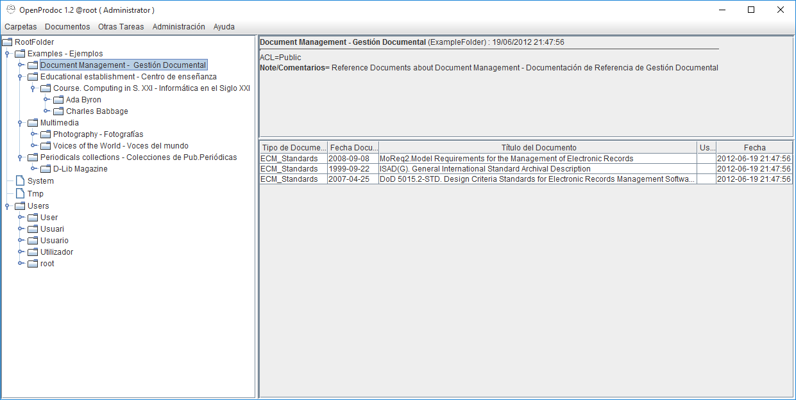

OpenProdoc
 OpenProdoc: Gestor Documental English
OpenProdoc: Gestor Documental English 
OpenProdoc 1.2
Openprodoc es un gestor documental, es decir, un programa para manejar documentos y compartirlos entre los usuarios, que contienen los documentos, así como una ficha descriptiva de cada documento, todo ello agrupado en la carpeta / expedientes y con una capa de seguridad por lo que cada usuario accede a los documentos permitidos.
Es gratuito y de código abierto, por lo que se puede revisar el código fuente e incluso mejorarlo o adaptarlo a sus necesidades.
OpenProdoc tiene una versión portátil que se puede utilizar en cualquier ordenador (Linux, Windows, Mac) sin instalación y con toda la funcionalidad.
Junto a la gestión de sus documentos, OpenProdoc incluye la gestión de tesauros en varios idiomas y diccionarios controlados que pueden utilizarse aislada o combinados con las definiciones de documentos.
Novedades de la versión 1.2 (Noviembre 2015)
La versión 1.2 ha añadido, a las funciones ya disponibles, varias novedades:
- Búsqueda por texto libre de los metadatos y contenido de los documentos en la mayoria de los formatos ofimáticos (.doc, .xls. .pdf, .ppt, .odp,..)
- Generación de informes y exportación de metadatos en los formatos que defina el usuario, pudiendo crear plantillas XML, HTML, CSV y TXT
- Soporte del formato RIS de referencias Bibliográficas
